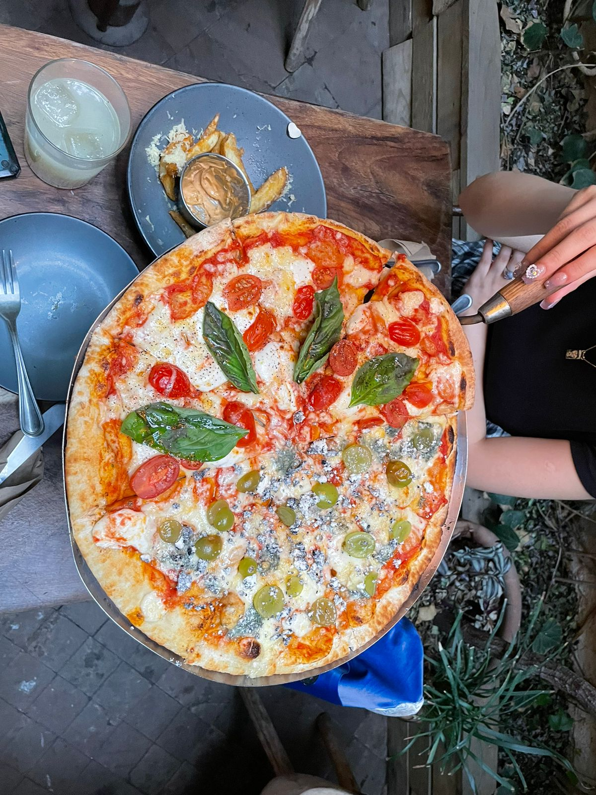

Pasatiempo 01
Comer demasiado
Disfruto de la comida y de probar nuevos platillos, ya sea en restaurantes o cocinando en casa. Me gusta explorar sabores y texturas, y compartir experiencias culinarias con amigos y familiares.